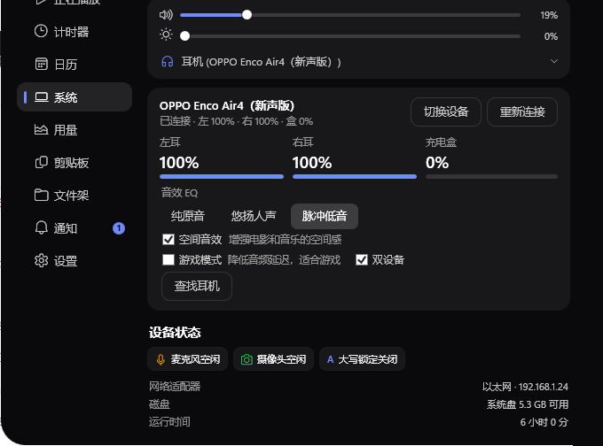
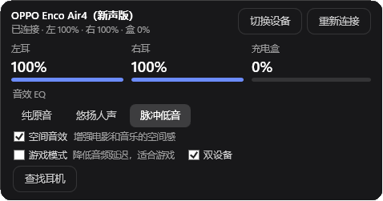
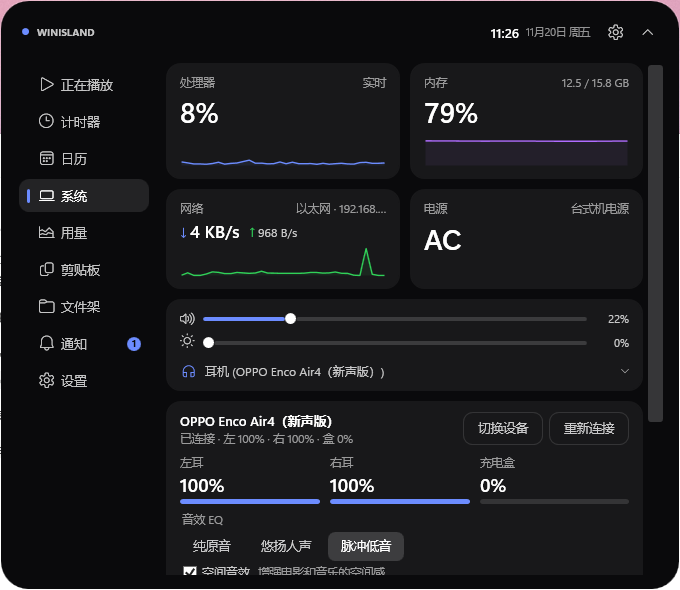

降噪 / 通透 / 自适应
按型号显示实际支持的档位：关闭、降噪、通透、自适应；部分型号还能调降噪等级与环境声级别。
系统只会告诉你耳机“已连接”。电量、降噪 / 通透、EQ、空间音频、游戏模式、双设备、查找耳机—— 以前只有手机 App 能做的事，现在在电脑顶部的小岛里就能完成。
Battery, ANC, transparency, EQ, spatial audio and game mode for your Bluetooth earbuds — right on Windows, across 15 brand protocols and 300+ models.
GitHub 下载慢？使用国内加速镜像下载（第三方代理，会校验文件大小与版本）

不是只显示一个“已连接”。WinIsland 会打开各品牌的私有控制通道， 读取耳机上报的真实状态，并把手机 App 里的开关做成 Windows 上的原生控件。

按型号显示实际支持的档位：关闭、降噪、通透、自适应；部分型号还能调降噪等级与环境声级别。
左耳、右耳、充电盒分别显示百分比和进度条，开盖、取出、放回都会实时刷新。
读取耳机自带的音效预设并直接切换；支持固定空间音频与头部跟踪的型号会单独给出开关。
一键降低蓝牙音频延迟，打游戏、看直播时口型对得上；鼠标悬停就能看到它对续航和稳定性的影响。
同时连接电脑和手机，摘下暂停、戴上继续，取决于型号是否上报这些能力。
让耳机响铃找位置；入耳贴合度检测会告诉你哪只耳塞没戴紧，避免降噪效果打折。
耳机自己上报的自动关机、触控按键分配、提示音语言等选项，会自动生成为列表或滑杆，不用猜命令。
电脑上配对过多副耳机时，在卡片里直接选另一副，自动切换当前控制设备，不用进系统设置翻蓝牙列表。
怎么做到的？通过各品牌耳机自己的 RFCOMM / GATT 控制通道通信，也就是手机 App 用的那套协议； 不需要安装官方客户端，也不会上传任何耳机数据。少数品牌同一时间只允许一个控制端接入， 这时关掉官方 App 或 EncoDeck 即可。
耳机卡片只是系统页的一部分。同一个岛上还有这些每天都会用到的东西。
封面、曲目、进度条与播放控制。紧凑态也能拖动进度，支持所有使用 Windows SMTC 的播放器。
DeepSeek 余额、OpenCode Go 与 OpenDesign 的额度窗口。按你的优先级显示，用量紧张时上岛提醒。
CPU、内存、网络实时曲线，音量、亮度、播放设备切换，以及麦克风、摄像头和大小写状态。
最近 30 条文本 / 文件、4 张图片一键回填。拖入文件自动展开，松手加入文件架，重启后保留。
支持每天 / 工作日 / 每周重复。到点常驻岛上，橙色脉冲光晕加铃声摆动，点击「关闭提醒」才消失。
窗口靠近时自动收成顶部细线，回到桌面再展开；也可以贴边隐藏，鼠标移到顶部才出现。
九个面板，统一的深色设计。点击截图可以放大查看。
电量、降噪、EQ、空间音频与查找耳机，都在这一页。
没有额外的启动器、账号或云端。WinIsland 直接运行在桌面顶部，只在你需要的时候出现。

一个 exe，双击就能用。不需要安装 .NET，也不需要管理员权限。
OPPO / OnePlus / realme、华为、荣耀、小米 / Redmi、vivo / iQOO、索尼、漫步者 EDIFIER、森海塞尔、三星、Google Pixel Buds、Bose、Nothing、水月雨、AKG、EarFun，共 15 个品牌协议、300+ 型号；另外识别雷蛇、罗技、HyperX、SteelSeries、雷柏、达尔优、迈从、JBL 等 USB / 2.4G 游戏耳机。降噪、EQ、空间音频等具体能力取决于型号与固件，程序只显示耳机真正上报的选项。
Windows 的蓝牙面板只做连接，不开放厂商私有协议。WinIsland 直接连接耳机自己的控制通道，所以能读到三段电量、降噪档位和 EQ，而这些在系统设置里是没有的。
不需要。官方客户端、EncoDeck 与本程序通常共用同一条控制通道，同时运行时会争用，关掉其中一个即可。耳机需要先在系统蓝牙里完成配对和连接。
不会。只发送厂商 App 也会发送的状态查询与设置命令，不写固件。个别型号的协议会随固件更新变化，失效时只是对应开关不出现，不影响其他功能。
不需要。发布的是自包含单文件版本，下载后直接运行，不会弹出运行时安装提示。
Key 使用 Windows DPAPI 加密，只保存在当前用户的电脑上；程序只向你配置的平台接口发请求，不上传到其它地方。也可以改用环境变量，不保存 Key。
多品牌耳机控制基于 GPL-3.0 的 EncoDeck / OppoPods 协议实现，因此整个项目以 GPL-3.0 发布，源码公开。
目前提供免安装单文件版本，安装版（Setup.exe）在规划中；数据和设置会保存在 %AppData%\WinIsland，升级或卸载默认不会删除。
1.3.2 起会在启动时和每 6 小时检查 GitHub Releases。发现新版本时岛上会提示，打开设置里的「更新」即可一键下载并重启安装；也可以手动下载新版 exe 覆盖旧文件，设置和提醒都会保留。
页面上的「国内加速下载」会走第三方 GitHub 镜像。程序内更新也会先对多个镜像测速、自动选择最快的源，低于 40 KB/s 会自动换源，并支持断点续传，下载完成后会校验文件大小和版本号。